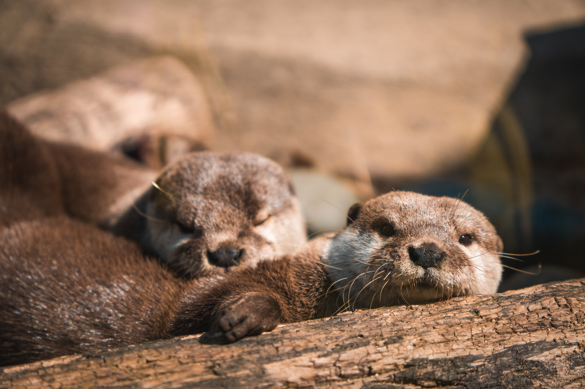

Nos espèces

Tigre

Hippopotamus

l’ours brun

Wallaby des rochers

Dauphin

Autrefois largement présente en Amérique du Sud, la loutre géante a connu une réduction drastique de
ses effectifs sous l’effet de différentes pressions liées à l'activité humaine. Aujourd’hui encore, le
devenir de l’espèce est incertain.
Loutre
Requins

Antilope tibet

L'argali

lynx

elephants